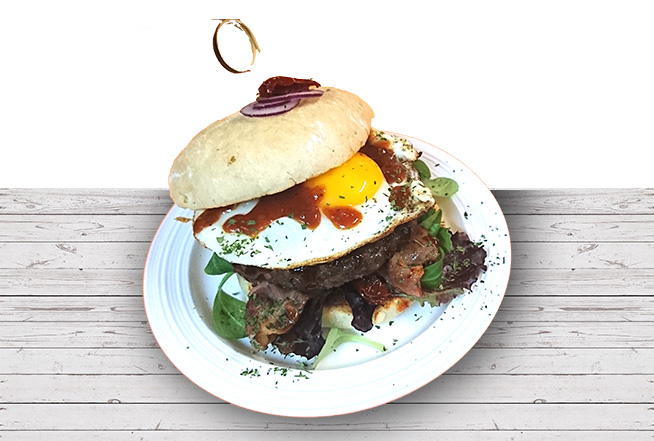
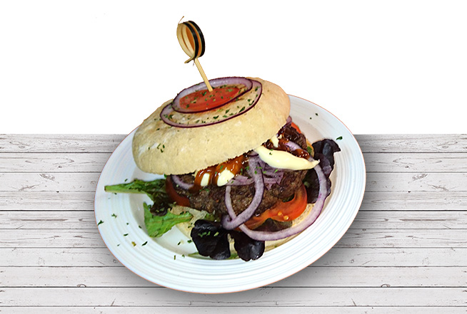
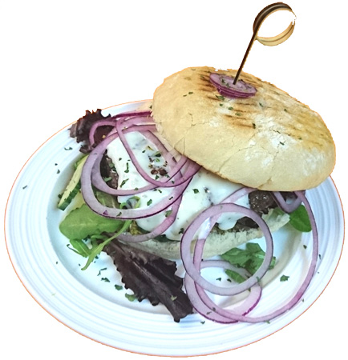
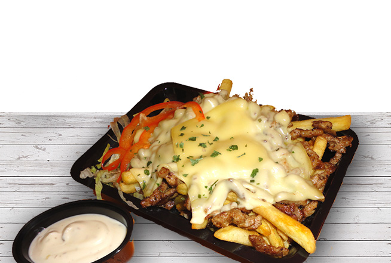
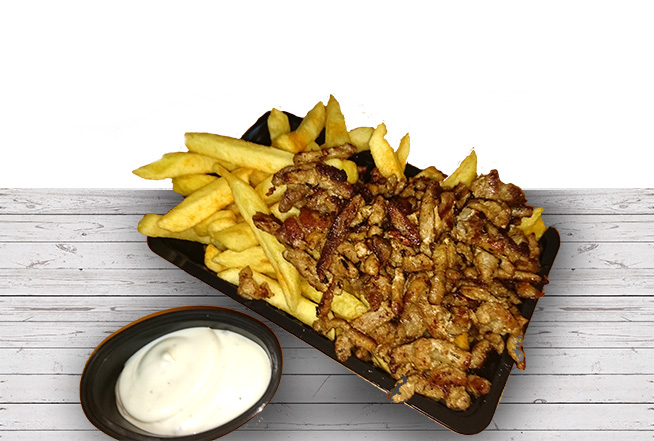
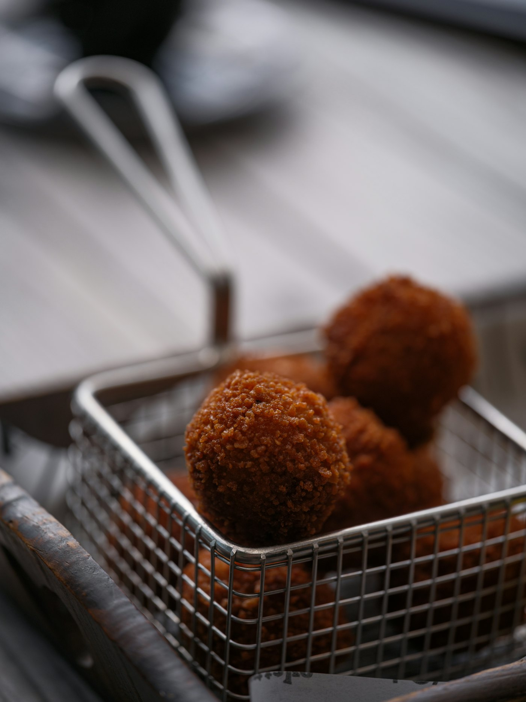
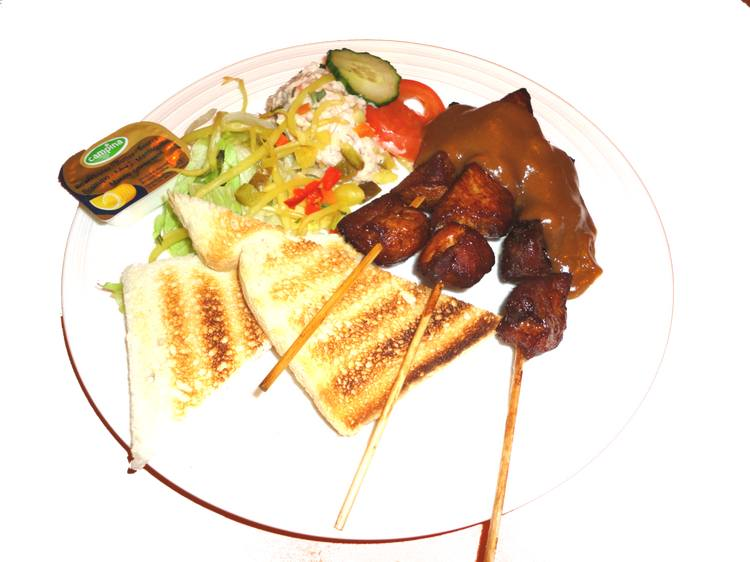
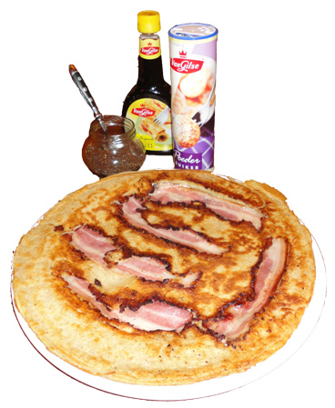

Grillburger De Rietlanden
Rucola sla, zongedroogde tomaatjes, augurk, gebakken ei met spek en rode ui saus.
1395Cafetaria in Grijpskerk en omstreken, sinds 1997
Vers vlees van Slagerij Boersema uit het dorp, speltmeel van de molen en koffie tussen onze verzameling koffiepotten. Om mee te nemen of lekker hier te eten.
Openingstijden: di t/m zo, maandag gesloten
175 gram puur rundvlees van Slagerij Boersema uit Grijpskerk, volgens speciaal recept gekruid en perfect gebakken op de bakplaat. De broodjes zijn gedeeltelijk van Turks deeg en grillen we kort voor een krokant laagje. Wij bakken de hamburgers medium; wilt u ze gaar, meld het dan even.

Rucola sla, zongedroogde tomaatjes, augurk, gebakken ei met spek en rode ui saus.
1395
Rucola sla, tomaat, rode ui, mayo en curry.
1195
Groene pesto, rucola, komkommer, rode ui en tzatziki saus.
1295Alles van onze kaart van 2026, met de actuele prijzen. Liever de originele kaart? Voorkant en achterkant.
| normaal | groot | |
|---|---|---|
| Zonder saus | 2,75 | 4,10 |
| Fritessaus | 3,55 | 5,30 |
| Brander mayonaise | 3,75 | 5,60 |
| Pindasaus | 3,75 | 5,60 |
| Speciaal | 3,65 | 5,45 |
| Oorlog | 3,65 | 5,45 |
| Joppie | 3,75 | 5,60 |
| Raspatat | +0,10 | +0,15 |
Probeer ook eens onze aardappelschijfjes: bij een menu € 0,75 extra, als portie € 3,25.


Onze menu's serveren wij met een grote portie patat en rauwkost. Met raspatat + 0,15.
Bij patat en een broodje shoarma zit een dubbele portie saus.

Wij gebruiken alleen A-merk snacks, zoals Mora, Kwekkeboom en Ad van Geloven, voor de goede smaak en de constante kwaliteit. De shoarma en saté halen wij vers bij Slagerij Boersema hier in Grijpskerk.
Wij bakken de hamburgers medium. Wilt u ze gaar, meld het dan even.
Een lekker wit bolletje als basis, met verse ingrediënten uit de saladebar en één van onze kwaliteitssnacks uit de frituur.

2 plakken wit of bruin brood met 3 gebakken eieren, geserveerd met een bolletje rundvleessalade en rauwkost.
Combineer zelf met één of meer ingrediënten, per ingrediënt 1,50.
Hartig: kaas, ananas, appel, banaan, ham, spek, paprika, tomaat, uien, warme brie en druiven. Zoet: kaas, banaan, ananas, appel, ham, spek.
Wij serveren onze pannenkoeken met stroop, poedersuiker en bruine suiker.

Wij maken onze pannenkoeken van spelt-pannenkoekmeel met als hoofdbestanddeel speltmeel, een voorloper van tarwe. Een gezonde en voedzame graansoort waar wij volledig achter staan. Ons meel bestellen we direct bij de molen, waar nog ambachtelijk wordt gemalen. Kortom: ook voor een pannenkoek, groot of klein, moet je bij De Rietlanden zijn!
IJs met een lekker sausje eroverheen. Klein, middel of groot.
IJs met vruchten in een saus, zoals kersen of rum-rozijnen. Normaal of klein.
Klein, middel of groot. In de smaken aardbei, banaan, vanille en een seizoenssmaak.
Bij ons zijn softijs en milkshakes het hele jaar verkrijgbaar. Wij gebruiken de lekkerste softijsmix: vol en romig van smaak. Er is nog veel meer: kijk voor het volledige assortiment en de actuele prijzen op de ijskaart bij de balie.
Wij, Bernhard en Gert-Jan, zijn in 1997 begonnen met de cafetaria, toen nog in een omgebouwde zeecontainer. Sinds juni 2011 zitten we in ons nieuwe pand aan de Kievitsweg, met een nog grotere verzameling koffiepotten en petroleumstellen.
We doen ons uiterste best om Grijpskerk en omstreken te voorzien van de lekkerste patat, snacks, pannenkoeken, grillburgers, broodjes en softijs voor een redelijke prijs. Dat begint bij de inkoop: wij kiezen standaard voor de hoogste kwaliteit, en dat proeft u.
Ons vlees halen we bij Slagerij Boersema in Grijpskerk: shoarma, saté en onze speciaal gekruide grillburgers. Het speltmeel voor de pannenkoeken wordt ambachtelijk gemalen door molen De Zuidmolen in Groesbeek. En tussen alle koffiepotten drinkt u koffie van Hesselink, een kleine familiebranderij.
Voor de patat kiezen we McCain, om de goede smaak en de constante kwaliteit. Probeer ook eens hun aardappelschijfjes.
Een tevreden klant krijg je niet, die moet je verdienen!
| Maandag | gesloten |
|---|---|
| Dinsdag | 16.00 – 19.30 |
| Woensdag | 16.00 – 19.30 |
| Donderdag | 11.00 – 19.30 |
| Vrijdag | 11.00 – 20.30 |
| Zaterdag | 11.00 – 20.30 |
| Zondag | 16.00 – 20.30 |
9843 HA Grijpskerk
0594 212 025
info@cafetariaderietlanden.nl
Ook op Facebook: cafetariaderietlanden
Een vraag, een grote bestelling of iets bijzonders? Stuur ons een bericht of bel 0594 212 025.